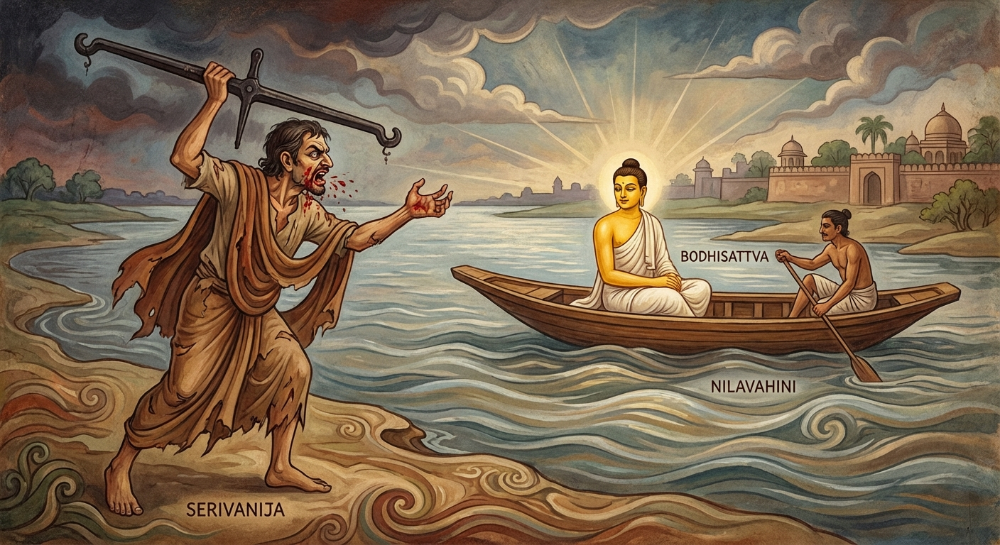

3. සේරිවවාණිජ ජාතකය (3)
“ඉධ චෙ නං විරාධෙසි” (ඔබ මෙය වරදවා ගතහොත්) යනුවෙන් ඇරඹෙන මෙම ධර්ම දේශනාව භාග්යවතුන් වහන්සේ සැවැත් නුවර වැඩවසන සමයෙහි, වීර්යය අත්හැර දැමූ එක්තරා භික්ෂුවක් අරබයා දේශනා කළහ. පෙර පරිදිම භික්ෂූන් වහන්සේලා විසින් කැඳවාගෙන එනු ලැබූ ඒ භික්ෂුව දැක ශාස්තෘන් වහන්සේ මෙසේ වදාළහ: “භික්ෂුව, ඔබ මෙබඳු වූ මාර්ග ඵල ලබා දෙන සාසනයක පැවිදි වී වීර්යය අත්හැර දමන්නේ නම්, ලක්ෂයක් වටිනා රන් තැටිය අහිමි කරගත් සේරිව වෙළෙන්දා මෙන් බොහෝ කාලයක් ශෝක කිරීමට සිදුවනු ඇත.” එවිට භික්ෂූන් වහන්සේලා එම අර්ථය පැහැදිලි කර දෙන ලෙස භාග්යවතුන් වහන්සේගෙන් ඉල්ලා සිටියහ. භාග්යවතුන් වහන්සේ භවාන්තරයෙන් වැසී තිබූ එම කරුණ ප්රකට කළහ.
අතීතයේ මෙයින් පස්වන කල්පයෙහි බෝධිසත්වයන් වහන්සේ ‘සේරිව’ නම් රටෙහි කච්ඡපුට (බඩු පොදි බැඳ කර තබාගෙන යන) වෙළෙන්දෙක්ව උපත ලැබූහ. ඔහු ‘සේරිවා’ නම් වූ තවත් ලෝභී කච්ඡපුට වෙළෙන්දෙකු සමඟ වෙළඳාම පිණිස ගමන් කරමින්, නීලවාහිනී නම් ගඟෙන් එතෙර වී ‘අරිට්ඨපුර’ (අන්ධපුර) නම් නගරයට පිවිසියේය. ඔවුහු නගර වීථි බෙදාගෙන තමන්ට අයත් වීථියෙහි බඩු විකුණමින් හැසිරුණාහ. අනෙක් වෙළෙන්දා ද තමාට ලැබුණු වීථිය ගත්තේය. එම නගරයෙහි එක්තරා සිටු කුලයක් පිරිහීමට පත්ව තිබුණි. එම පවුලේ පිරිමි දරුවන් හා සොහොයුරන් ද, ධනය ද විනාශ වී ගොස්, එක් මිත්තණියක් සහ මිණිබිරියක් පමණක් ඉතිරිව සිටියහ. ඒ දෙදෙනා අන් අයට බැලමෙහෙවර කරමින් ජීවත් වූහ. ඔවුන්ගේ නිවසේ මහා සිටුවරයා විසින් පරිභෝජනය කරන ලද රන් තැටියක් වෙනත් භාජන අතර දමා තිබූ අතර, බොහෝ කලක් පරිහරණය නොකළ බැවින් එහි මල බැඳී තිබුණි. එය රන් බඳුනක් බව ඔවුහු නොදැන සිටියහ. ඒ ලෝභී වෙළෙන්දා එම අවස්ථාවේ “වළලු ගන්න, වළලු ගන්න” යැයි කෑගසමින් එම නිවසට පැමිණියේය. ඒ දැරිය ඔහු දැක, “මිත්තණියනි, මට පළඳනාවක් ගෙන දෙන්න” යැයි ඉල්ලා සිටියාය. “දුවේ, අපි දුප්පත් අය වෙමු. කුමක් දී එය ගන්නෙමු ද?” යැයි මිත්තණිය ඇසුවාය. “අපට මේ තැටියක් ඇත. එයින් අපට ප්රයෝජනයක් ද නැත. මෙය දී පළඳනාවක් ගනිමු” යැයි දැරිය කීවාය. ඇය වෙළෙන්දා කැඳවා අසුනක හිඳුවා, ඒ තැටිය දී, “මහතාණෙනි, මෙය ගෙන ඔබගේ නැගණියට සුදුසු කිසියම් දෙයක් දෙනු මැනව” යැයි පැවසුවාය. වෙළෙන්දා තැටිය අතට ගෙන එය රන් බඳුනක් දැයි සැක සිතී, තැටියේ පිටුපස ඉදිකටුවෙන් ඉරක් ඇඳ එය රන් බව දැනගත්තේය. “මොවුන්ට කිසිවක් නොදී මේ රන් බඳුන රැගෙන යන්නෙමි” යි සිතූ ඔහු, “මෙහි කිසිම වටිනාකමක් නැත. මෙය මුදලින් අඩ මසක්වත් නොවටී” යැයි පවසා, බඳුන බිම දමා හුනස්නෙන් නැගී ගියේය. “එක් අයෙකු පිවිස පිටව ගිය වීථියකට අනෙකාට පිවිසීමට ඉඩ ඇත” යන වෙළඳ සිරිත අනුව, බෝධිසත්වයන් වහන්සේ එම වීථියට පිවිස “වළලු ගන්න, වළලු ගන්න” යැයි කියමින් එම නිවසටම පැමිණියහ.
නැවතත් ඒ දැරිය මිත්තණියට පෙර පරිදිම ඉල්ලීමක් කළාය. එවිට මිත්තණිය, “දුවේ, කලින් පැමිණි වෙළෙන්දා තැටිය බිම දමා ගියේය. දැන් කුමක් දී ගන්නේදැ?” යි ඇසුවාය. “මිත්තණියනි, කලින් පැමිණි වෙළෙන්දා රළු බස් ඇත්තෙකි. නමුත් මොහු දැකුම්කළුය, මිහිරි කතා ඇත්තෙකි. මොහු මෙය ගනු ඇත” යැයි දැරිය කීවාය. “එසේ නම් ඔහු කැඳවන්න” යැයි මිත්තණිය පැවසුවාය. ඇය වෙළෙන්දා කැඳවූවාය. නිවසට පැමිණ හිඳගත් ඔහුට ඔවුහු තැටිය දුන්හ. ඔහු එය රන් බඳුනක් බව දැන, “මෑණියනි, මේ තැටිය ලක්ෂයක් වටිනා එකකි. මෙයට හුවමාරු කිරීමට තරම් වටිනා බඩු මා ළඟ නැතැ” යි කීවේය. “මහතාණෙනි, පළමු පැමිණි වෙළෙන්දා මෙය අඩ මසක්වත් නොවටින බව පවසා බිම දමා ගියේය. නමුත් ඔබගේ පිනෙන් මෙය රන් වූවා විය හැක. මෙය අපි ඔබට දෙමු. අපට කිසියම් දෙයක් දී මෙය රැගෙන යනු මැනව.” එවිට බෝධිසත්වයන් වහන්සේ තමා අත තිබූ කහවණු පන්සියයක් ද, පන්සියයක් වටිනා සියලු භාණ්ඩ ද ඔවුනට දී, “මට මේ තරාදියත්, පසුම්බියත්, කහවණු අටකුත් දෙන්න” යැයි ඉල්ලාගෙන පිටත් වූහ. ඔහු ඉක්මනින්ම ගංතෙරට ගොස් නැවියාට කහවණු අට දී නැවට නැග්ගේය.
ඉක්බිතිව ඒ ලෝභී වෙළෙන්දා නැවතත් එම නිවසට ගොස්, “ඒ තැටිය ගෙන එන්න, මම ඔබට කුමක් හෝ දෙන්නෙමි” යි පැවසීය. එවිට ඇය ඔහුට දොස් පවරමින්, “ඔබ අපගේ ලක්ෂයක් වටිනා රන් තැටිය අඩ මසක්වත් නොවටිනා බව කීවෙහි ය. නමුත් ඔබගේ ස්වාමියා වැනි වූ දැහැමි වෙළෙන්දෙක් අපට දහසක් වටිනා දේ දී එය රැගෙන ගියේය” යැයි කීවාය. එය ඇසූ ඔහු, “ලක්ෂයක් වටිනා රන් තැටියෙන් පිරිහුණෙමි. මට මේ සිදුවූයේ මහත් පාඩුවකි” යි හටගත් බලවත් ශෝකයෙන් සිහි එළවා ගැනීමට නොහැකිව සිහිසන් විය. ඔහු තමා අත තිබූ කහවණු සහ බඩු භාණ්ඩ එතැනම විසුරුවා හැර, ඇඳිවත පවා ගලවා දමා, තරාදි දණ්ඩ මුගුරක් ලෙස අතට ගෙන බෝධිසත්වයන් ගිය පියසටහන් ඔස්සේ ලුහුබැඳ ගියේය. ගංතෙරට ගිය ඔහු, යන්නා වූ බෝධිසත්වයන් දැක, “එම්බා තොටිය! නැව ආපසු හරවා ගෙනෙව!” යි කෑගැසීය. නමුත් බෝධිසත්වයන් වහන්සේ “දරුව, නැව ආපසු නොහරවන්න” යැයි තොටියාට පැවසූහ. ඉවත්ව යන බෝධිසත්වයන් දෙස බලා සිටි අනෙක් වෙළෙන්දාට බලවත් ශෝකයක් ඇති විය; ළය උණුසුම් විය; මුවින් උණු ලේ පිටවිය. වියළී ගිය වැවක මඩ තට්ටුවක් පැළී යන්නාක් මෙන් ඔහුගේ හදවත පැළී ගියේය. ඔහු බෝධිසත්වයන් කෙරෙහි වෛර බැඳගෙන එතැනම මරණයට පත් විය. මෙය බෝධිසත්වයන් කෙරෙහි දෙව්දත් තෙරුන් ඇති කරගත් පළමු වැනි වෛර බැඳීමයි. බෝධිසත්වයන් වහන්සේ දානාදී පින්කම් කොට කම් වූ පරිදි පරලොව ගියහ.

සම්මා සම්බුදුරජාණන් වහන්සේ මෙම ධර්ම දේශනාව පවත්වා, අභිසම්බුද්ධත්වයට පත්වීමෙන් පසුව මෙම ගාථාව වදාළහ.
“ඉදින් මෙහිදී සදහම් මඟ - යමෙක් ගනී ද වරදවා,
බොහෝ කලක් ඔහු තැවෙනු ඇත - සේරිව වෙළෙන්දා ලෙසින්”
එහි ‘ඉධ චෙ නං විරාධෙසි, සද්ධම්මස්ස නියාමතං’ යන්නෙන් අදහස් වන්නේ, මෙම ශාසනයෙහි ‘සද්ධම්ම නියාමතාව’ හෙවත් සෝවාන් මාර්ගය වරදවා ගැනීමයි. එනම්, ඉදින් ඔබ වීර්යය අත්හැර දැමීම නිසා එය ලබා ගැනීමට හෝ අවබෝධ කර ගැනීමට නොහැකි වුවහොත් යන අර්ථයයි. ‘චිරං ත්වං අනුතප්පෙසි’ යනු, එසේ වුවහොත් ඔබ බොහෝ කාලයක් පුරා ශෝක කරමින්, විලාප දෙමින් පසුතැවෙනු ඇති බවයි. නොඑසේනම් වීර්යය අත්හැර දැමීම හේතුවෙන් ආර්ය මාර්ගය අහිමි කරගෙන, බොහෝ කාලයක් නිරය ආදියේ ඉපදී නොයෙක් දුක් විඳිමින් පසුතැවීමටත්, වෙහෙසට පත්වීමටත් සිදුවන බව මෙහි අර්ථයයි. ඒ කෙසේ ද යත්? ‘සෙරිවායංව වාණිජො’ යනුවෙනි. එනම් ‘සේරිවා’ නම් වූ මේ වෙළෙන්දා මෙනි. මෙය මෙසේ කියන ලද්දේ වෙයි: පෙර සේරිවා නම් වෙළෙන්දා ලක්ෂයක් වටිනා රන් තැටියක් ලැබී, එය ලබා ගැනීම සඳහා උත්සාහ නොකොට එයින් පිරිහී පසුතැවිල්ලට පත් විය. එලෙසින්ම ඔබ ද, පිරිසිදු කරන ලද රන් තැටියක් වැනි වූ ආර්ය මාර්ගය මෙම ශාසනයේ තිබියදී, වීර්යය අත්හැර දැමීම නිසා එය ලබා නොගෙන එයින් පිරිහී බොහෝ කාලයක් පසුතැවෙනු ඇත. ඉදින් වීර්යය අත් නොහරින්නේ නම්, නුවණැති වෙළෙන්දා රන් තැටිය ලබා ගත්තාක් මෙන්, මාගේ ශාසනයෙහි නවවිධ වූ ලෝකෝත්තර ධර්මය ලබා ගනු ඇත.
මෙසේ ශාස්තෘන් වහන්සේ රහත් බව කුළුගන්වමින් මෙම ධර්ම දේශනාව පවත්වා චතුරාර්ය සත්යය ප්රකාශ කළහ. සත්ය දේශනාව අවසානයේ වීර්යය අත්හළ භික්ෂුව අග්ර ඵලය වූ අරහත් ඵලයෙහි පිහිටියේය.
ශාස්තෘන් වහන්සේ මේ කතා වස්තූන් දෙක ගළපා, අනුසන්ධි යොදා ජාතකය සමාප්ත කරමින්, “එකල අඥාන වෙළෙන්දා වූයේ දේවදත්තය. නුවණැති වෙළෙන්දා වූයේ මම ය” යි වදාරා දේශනාව නිම කළහ.
තුන්වන සේරිවවාණිජ ජාතක වර්ණනාව නිමාවිය.